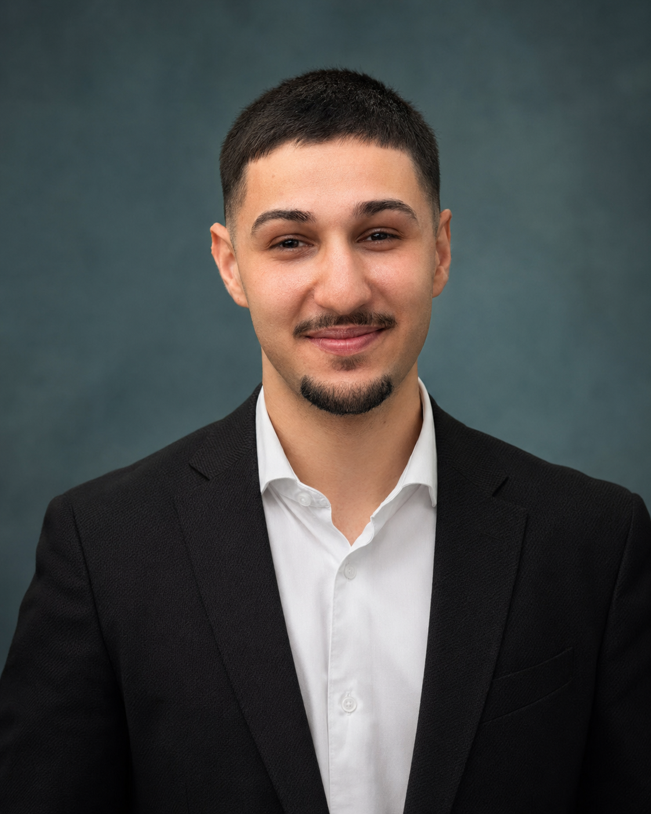
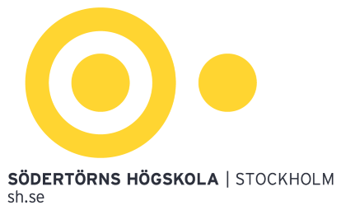

Nyexaminerad företagsekonom
Jag har läst Ekonomi, teknik och design vid Södertörns högskola, med särskilt intresse för marknadsföring, kundbeteende och verksamhetsutveckling.
Hej, jag heter Arian.
Under studierna har jag lett en bostadsrättsförening, arbetat nära kunder och skrivit om motivation och lojalitet i digitala tjänster. Här berättar jag mer om vad jag faktiskt gjorde, vad jag lärde mig och vad jag vill ta med mig in i nästa roll.
“Jag lär mig bäst när jag får sätta mig in i en verklig fråga och hjälpa den framåt.”

Kort om mig
Jag har läst Ekonomi, teknik och design vid Södertörns högskola, med särskilt intresse för marknadsföring, kundbeteende och verksamhetsutveckling.
Jag ledde en bostadsrättsförening med 44 lägenheter och fick lära mig att skapa struktur när frågor saknade färdiga svar.
Genom Coop och Willys har jag byggt servicevana, omdöme och förmågan att behålla lugn och noggrannhet i högt tempo.
Jag tycker om digitala verktyg, lär mig nya system snabbt och använder AI som stöd för att strukturera, testa och förbättra arbetssätt.
Tre delar av min erfarenhet
Jag ville inte bygga en sida som bara upprepar mitt CV. Därför visar jag några delar av min bakgrund lite mer på djupet med fokus på vad jag faktiskt gjorde.
Ledarskap och ansvar
När jag blev styrelseordförande hade jag ingen tidigare erfarenhet av att leda en bostadsrättsförening. Jag fick sätta mig in i frågor från grunden, hålla ihop möten, följa upp beslut och hjälpa styrelsen framåt i både vardagliga och större frågor.
Läs om styrelsearbetet →Analys och marknadsföring
Mitt examensarbete gav mig möjlighet att fördjupa mig i kundmotivation, lojalitet och digitala tjänster. Det viktigaste var inte bara resultatet, utan processen bakom, avgränsning, datainsamling, analys och tydlig kommunikation.
Läs om examensarbetet →
Digital nyfikenhet
När mitt jobbsökande började spreta mellan annonser, dokument och anteckningar byggde jag en egen portal. Jag är inte utvecklare, men jag kunde definiera behovet, styra lösningen och förbättra den steg för steg med AI som verktyg.
Läs om det digitala initiativet →Min väg hit
För att göra det tydligare har jag lagt det i en enkel tidsordning. Flera delar överlappar, men tillsammans visar de hur jag successivt har byggt min grund.
Jag började mina universitetsstudier vid Karlstads universitet.
Jag fortsatte på Södertörns högskola inom Ekonomi, teknik och design, med inriktning mot företagsekonomi.
Genom Willys och Coop har jag arbetat med service, problemlösning och ansvar i högt tempo.
Parallellt med studier och arbete ledde jag styrelsen och föreningens mötes och beslutsarbete.
Efter mandatperioden har jag fortsatt stötta i frågor som bredband, ventilation, stadgar och samverkan.
Jag söker en kvalificerad heltidsroll där jag får fortsätta lära mig, bidra och växa.
Så fungerar jag
Jag vill förstå problemet innan jag försöker lösa det. Det innebär ofta att ställa följdfrågor, läsa in mig och prata med de personer som berörs.
När information kommer från olika håll försöker jag sortera den, synliggöra skillnader och göra nästa steg tydligare.
Jag tycker om att ta ansvar för sådant som annars riskerar att stanna mellan olika personer, leverantörer eller beslut.
Kontakt
Jag tar gärna en första kontakt och berättar mer om min bakgrund, vad jag söker och hur jag skulle kunna bidra.